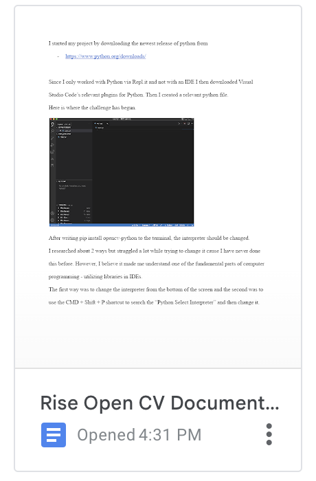

HOME
I’m a highschool student who adores every aspect of computers! I'm especially interested in VR, AR, Game development along with parts of AI. I'm currently learning about the computer hardware and WPILIB library for my first FRC year, studying Flutter and exploring some front end languages.
I also am a huge animation and 3D design geek so I love working on Occulus Quest 2 games as well :) I started side loading and making my XR projects in Unity this summer. Hope to improve myself more on this topic!
The problem I want to solve is related to my reflections on mortality. I understand that a lot of us are developing different kinds of technologies in various fields. However, I believe we miss the issue that our lives will end one day just like everyone around us. I feel like this is a missing spot in human history, an undeveloped field. I think upon developing a Metaverse in which our consciousness can be programmed. My enthusiasm for computer science and programming has developed over the idea of programming our consciousness.
I feel passionate about making a difference in paralysed patients' life because I feel a connection between people who are like me, bullied, excluded and wanted to delve into alternative realities and them, people who felt our world's limitations heavily due to their bodies, ostracized from society and wanted an escape from the reality we live in.
This application I designed allows you to control your computer with your eyes, is free and could be used on both macOS and Windows computers.
There are also resources for online jobs and education that could be efficiently used with my application. Hope this helps!
Documentation

This is a documentation page I prepared. It is 8 pages long and consists of how I used my knowledge on Open CV, MediaPipe and Pyautogui to create this eye tracking application. It can be a fun guide for sofware developers to explore and learn more about machine learning. You can access the google document by clicking on the image above.
Sources
This is the source section of my website. I gatherered specific websites in order for you to reach specific job qualifications or proper online education with the tool I provided.
| Website Name |
Link |
| UpWork |
https://www.upwork.com/ |
| PicoWorkers |
https://sites.google.com/view/picoworkers-com/inicio |
| MicroWorkers |
https://www.microworkers.com/ |
| RapidWorkers |
https://rapidworkers.com/ |
| Khan Academy |
https://www.khanacademy.org/ |
Eba |
https://www.eba.gov.tr/ |